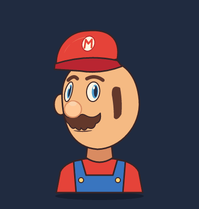

Параметры движения и режимы персонажа
Сочетания поворота, век и рта: таблицы двух параметров и корректирующие формы.
Свойства и ключи доступны через правый клик по объекту. В фокусе анимации сохраняется таймлайн; отдельный предпросмотр справа проверяет результат без изменения рисунка и ключей.
Один ползунок управляет несколькими частями рисунка. Записывайте его на таймлайне, а общие опорные значения исправляйте отдельно от клипа. Первый пример — голова героя с небольшим поворотом, морганием, ртом и сменной кепкой.
Открыть пример
Файл → Новое → Персонажи → Голова героя. Сохраните свою копию. Тот же исходник: character-portrait.msc. Это портретный стенд, отдельный от прежнего персонажа с ходьбой и бегом. Пикселизация не применяется.

Три раздельные задачи
Сверху доступны общие пространства «Рисование», «Настройка» и «Анимация» — для персонажей и UI. Справа видна цель правки. Подробности: панели, фокус и запись пробной позы.
| Режим | Что менять | Куда записывается |
|---|---|---|
| Рисование | Контуры, цвета, детали и одежду. | При выбранном клипе анимируемые значения и контуры записываются в общий текущий кадр. |
| Настройка | Параметры движения, связи и опорные формы. | Обычные ползунки записывают текущий кадр; отдельно выбранная опора изменяет общую связь для всех клипов. |
| Анимация | Позы, ключи, кривые и клипы. | Использует тот же кадр и автоключ. Прямые ключи свойств разрешены для UI и персонажей. |
Переключение пространства сохраняет клип, время и пробную позу, останавливает воспроизведение и само не меняет документ. Прямой ключ свойства имеет приоритет над связью параметра; художник сам отвечает за согласованность таких правок. Структурные команды и правка опор меняют общее устройство персонажа.
Создать движение
- Выберите «Анимация». На таймлайне доступны Look (поворот), Talk (разговор) и Expressions (сочетания). Можно создать новый клип обычными инструментами таймлайна.
- Поставьте время и измените «Поворот головы», «Моргание» или «Рот». Автоключ исходно включён; если его выключить, это пробная поза. Ромб или «Записать позу» создаёт ключ вида
turn.value; при включённом автоключе значение записывается сразу. Отдельные дорожки носа, глаз и кепки не нужны. - Ромб у значения добавляет или удаляет ключ. Перемещение, копирование и кривые ключей работают как на обычных дорожках.
- Сохраните файл и откройте снова. Параметры, связи, контуры и клипы хранятся в одном MSC; проигрывание не переписывает текст.
В этой заготовке поворот ограничен примерно ±34°. Шар смещает и сужает черты лица, морфинг меняет силуэт, отдельные связи корректируют нос и опору кепки. Поворот не является восстановлением полной 3D-головы.
Исправить общее поведение
- Перейдите в «Настройка» и раскройте «Опорные значения» нужного параметра.
- Нажмите кнопку позиции, например 1, рядом со связью «Лицо · Разворот». Она показывает эту опору. Остальные ползунки остаются доступны для проверки сочетаний.
- Исправьте число справа: например, крайний поворот с 34° на 30°. Эта связь теперь используется во всех клипах.
- Вернитесь в «Анимация» и проверьте движение. Ctrl+Z возвращает исправление; ключи клипов при правке связи не меняются.
Теперь доступны сетка 3×3 и формы контура. Прежняя «Голова героя» продолжает использовать morph и 2.5D; новая заготовка «Аниме-лицо» показывает вложенные сетки. Правка общих опор и запись формы текущего кадра остаются разными явными операциями.
Сменная кепка
В «Рисовании» откройте «Персонаж» и выберите красную или зелёную кепку; слот также позволяет снять её. «Своя копия» создаёт вариант для изменения рисунка. Обе кепки находятся внутри общей опоры, которой управляет поворот. Поэтому смена или копирование кепки сохраняет движение без новых дорожек.
Копирование варианта с собственными связями параметров пока отклоняется с объяснением. На первом этапе общие связи нужно размещать на опоре вне переключаемых групп. Необычной шляпе может понадобиться другая опора или свои поправки; универсальной подгонки любого рисунка ещё нет.
Синтаксис
artboard "Пример" 240x240 game
parameter turn "Поворот головы" range -1 1 default 0 value 0
ellipse head at 120 120 size 100 fill #f5ba83
ellipse eye on head lat 15 lon 20 wrap size 14 fill #243046
driver turn {
head.yaw -1: -30 | 0: 0 | 1: 30
eye.sx -1: 0.8 | 0: 1 | 1: 0.8
}
anim Look 2s {
turn.value 0: -1 ease-in-out | 1: 1 | 2: -1
}range задаёт пределы, default — нейтральную позу, value — исходное значение документа. Внутри driver числа слева от двоеточия — позиции параметра, а внутри anim — время в секундах. В связях по умолчанию линейная интерполяция; кривую можно указать явно. В анимационных ключах сохраняются обычные кривые Motif. При вычислении значения параметра ограничиваются диапазоном.
- Параметры и связи пишутся на верхнем уровне после
artboardи принадлежат одному холсту. Идентификаторы не пересекаются с фигурами илиworld. - В одном блоке
driverзадаются связи параметра. У каждой связи должны быть разные позиции, включая минимум и максимум диапазона. - Пока поддерживаются числовые свойства фигур, включая масштаб, вращение, непрозрачность, параметры орбит и морфинга. Значения опор — обычные числа. Цели морфинга задаются существующим
morph. - Одним свойством управляет одна связь. Прямая анимация этого свойства разрешена и имеет приоритет над связью в выбранном клипе. Разные параметры могут управлять разными свойствами одной фигуры.
- При переходе машины состояний смешиваются значения параметров, затем вычисляются связи. Это сохраняет промежуточную опору даже при несимметричных крайних формах.
Что здесь может быть процедурным
После подготовки рисунка и связей достаточно генерировать небольшое число сигналов: взгляд на цель, поворот по направлению движения, интервалы моргания, цикл дыхания, раскрытие рта и эмоциональные добавки. Эти сигналы могут поступать от записанного клипа, игровой логики или генератора. Уже сейчас один набор связей обслуживает разные клипы; встроенные автоматические генераторы моргания, липсинка и эмоций этим этапом не добавляются.
Добавлены вложенные сетки 3×3 и сохранённые формы контура, а также пример «Аниме-лицо». Следующие этапы — двумерные сочетания параметров, корректирующие формы, управляемые перекрытия и процедурные генераторы с seed, приоритетами и запеканием в ключи.
Особенно проверяйте сочетания: закрытый глаз при повороте, рот при улыбке, волосы поверх одежды. При больших разворотах нужны новые рисунки или переключение видов. Вектор упрощает редактирование и масштабирование, но не отменяет художественной подготовки. См. план развития и официальные описания параметров и деформеров Live2D.
Короткая проверка за компьютером
- В «Настройке движений» поверните голову от −1 до 1. Закройте глаза и откройте рот одновременно. Оцените лицо в крайних и промежуточных положениях.
- В «Анимации» запустите Expressions, поставьте паузу и добавьте ключ ползунком. Проверьте Undo/Redo и повторное открытие файла.
- Во «Рисовании» смените кепку, затем снова запустите клип. Проверьте крепление и перекрытие.
- В «Настройке движений» немного измените крайнюю опору поворота. Проверьте изменение Look и Talk без правки их ключей.
- Проверьте, удобно ли разделены режимы и хватает ли места для ползунков. Рисунок и удобство этой первой версии ещё требуют вашей оценки.
PNG, видео и запечённый экспорт Godot используют общее ядро позы, включая сетки и формы. Деформер применяется после костей и проекции, при наличии симуляции — после неё. API отдельных параметров в Godot, произвольная топология сетки и улучшение совместной работы skin + wrap остаются отдельными задачами.